El control total de la salud y los paseos de tu mascota.
Pet Tracker centraliza los paseos con GPS, la alimentación, las medicinas y la evolución clínica de tus mascotas en una sola app, con gráficas claras y un diseño que se adapta a tu día.
Ya disponible para Android. Descárgala gratis en Google Play.
Desarrollado por MMDevs · Privacidad por diseño · Sin publicidad
Todo lo que necesitas para cuidar de tu mascota
Diseñado para familias con una o varias mascotas, pensado para el día a día.
Paseos GPS multimascota
Registra rutas, distancia y duración de los paseos, incluso cuando sales con varias mascotas a la vez.
Registro de comida
Lleva un control de raciones, horarios y tipo de alimento para cada mascota de tu hogar.
Medicinas y deposiciones
Anota tratamientos, recordatorios de medicación y el seguimiento de deposiciones para detectar cambios a tiempo.
Gráficas clínicas
Visualiza la evolución de peso, paseos y hábitos en gráficas claras para compartir con tu veterinario.
Tema claro / oscuro
Una interfaz cuidada que se adapta automáticamente a la preferencia de tu dispositivo.
Recordatorios personalizados
Configura avisos a tu medida para paseos, comidas y medicinas, y no olvides nada importante.
Así se ve Pet Tracker en tu móvil
Capturas reales de la app, sin montajes.
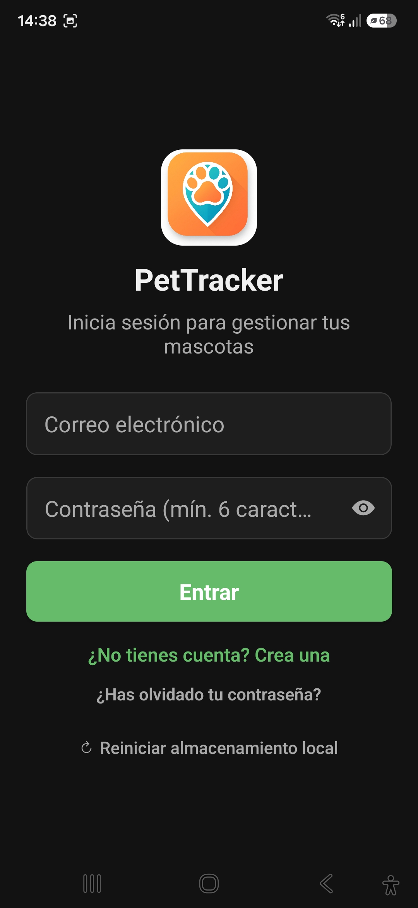
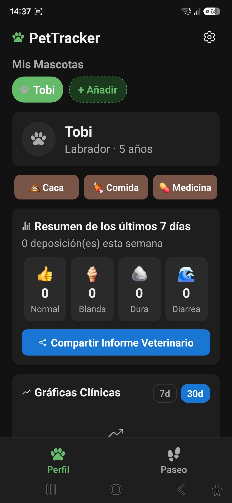
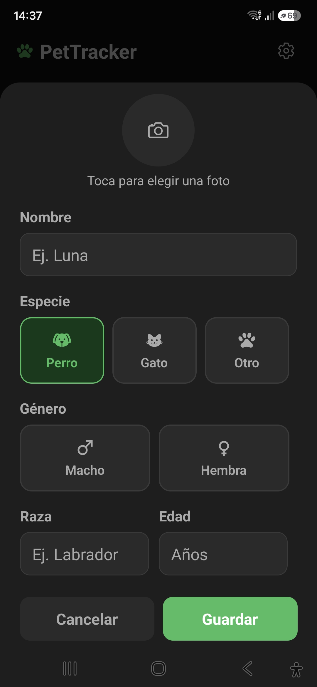
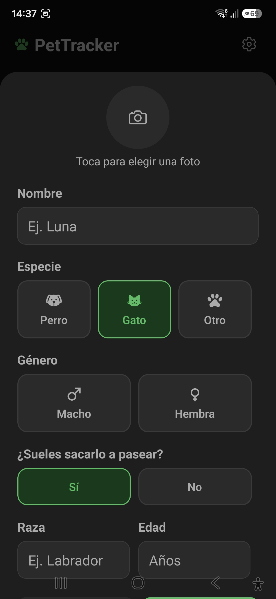
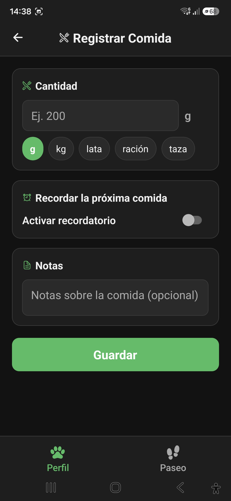
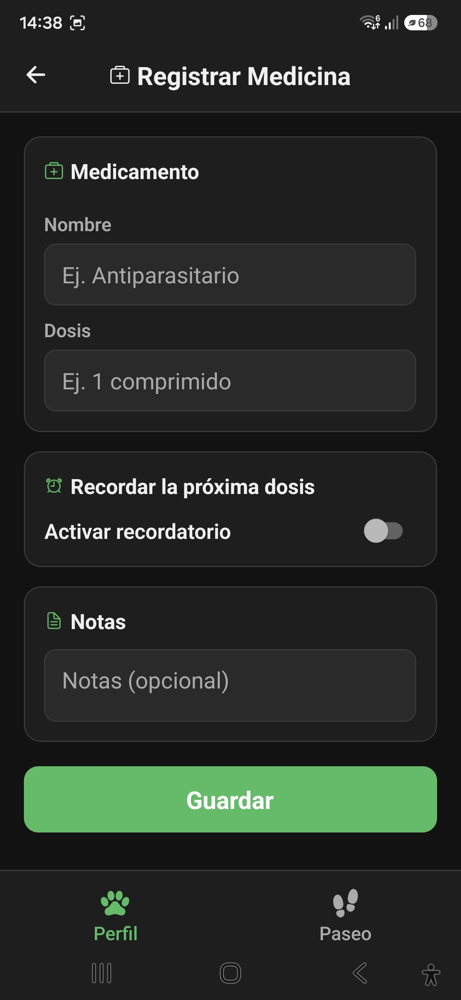
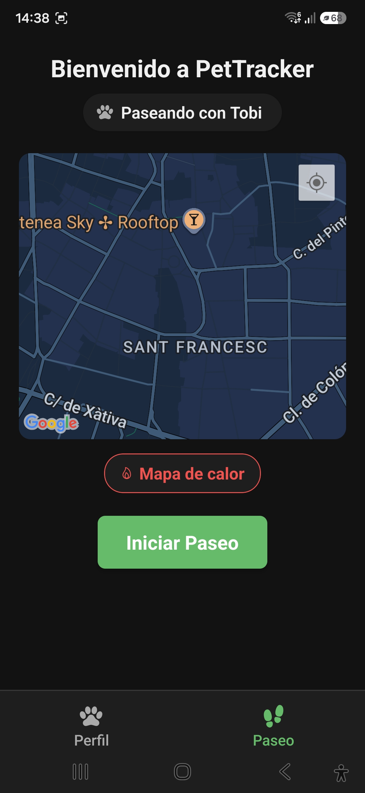
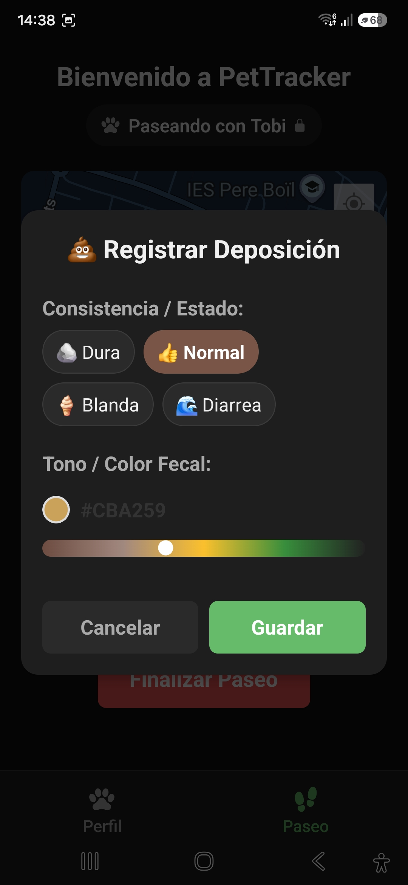
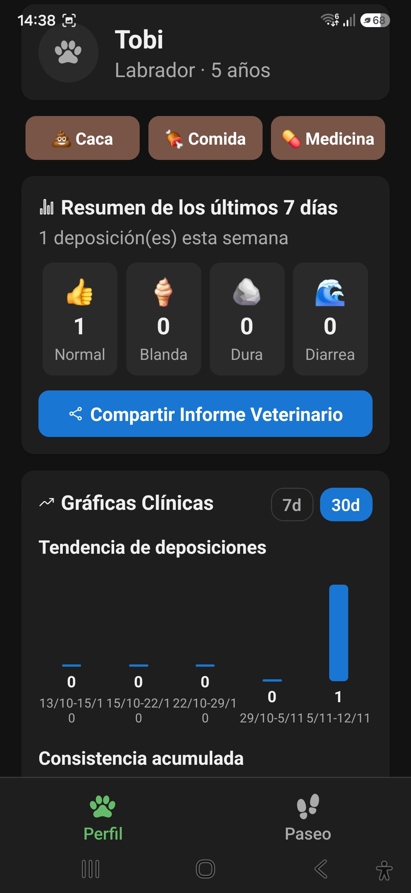
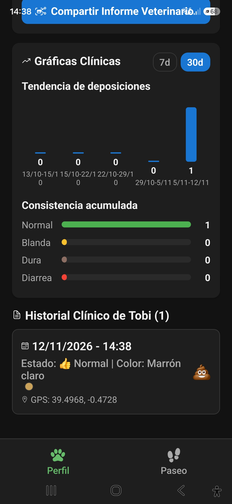
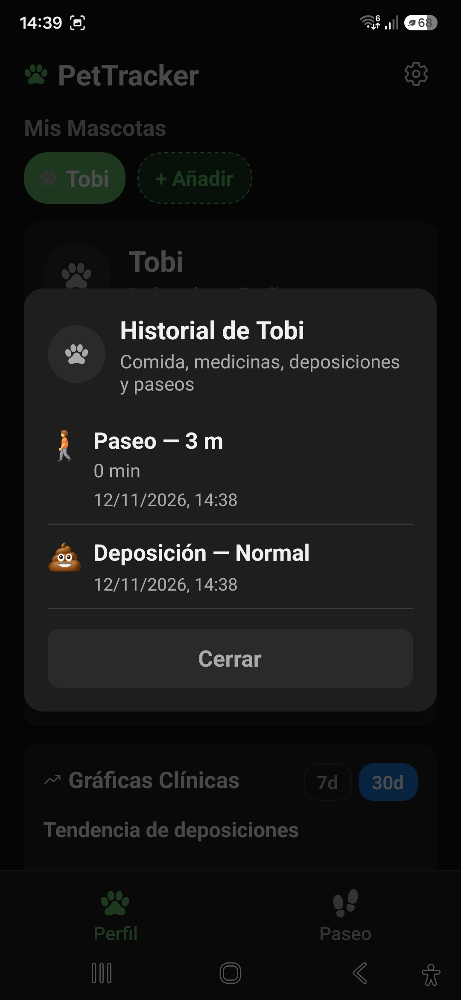
Desarrollado por MMDevs
Una app creada con cariño para quienes cuidan mascotas cada día. — mmdevs.es
Resolvemos tus dudas
Si no encuentras la respuesta que buscas, escríbenos a mmdevmerono@gmail.com.
¿Pet Tracker tiene coste?
Pet Tracker ya está disponible gratis en Google Play. No incluye anuncios ni comparte tus datos con terceros con fines publicitarios.
¿Qué datos de ubicación se recogen y para qué?
Solo accedemos a tu ubicación precisa o aproximada mientras registras un paseo, exclusivamente para calcular la distancia recorrida y dibujar la ruta en el mapa. No se usa con fines publicitarios.
¿Puedo usar la app con varias mascotas?
Sí. Pet Tracker permite crear perfiles para cada mascota y registrar paseos conjuntos con varias de ellas a la vez.
¿Funciona sin conexión a internet?
Sí, gracias al almacenamiento local del dispositivo (AsyncStorage) puedes seguir usando la app sin conexión; los datos se sincronizan cuando vuelve la conectividad.
¿Cómo elimino mi cuenta y mis datos?
Puedes eliminar tu cuenta desde Ajustes ⚙️ → Cuenta → Eliminar cuenta dentro de la app, o solicitándolo por correo. Consulta todos los detalles en Eliminación de cuenta y datos.
¿Pet Tracker sustituye a mi veterinario?
No. Pet Tracker es una herramienta de seguimiento informativo y organizativo; no diagnostica ni trata enfermedades. Ante cualquier duda de salud, consulta siempre con un veterinario.